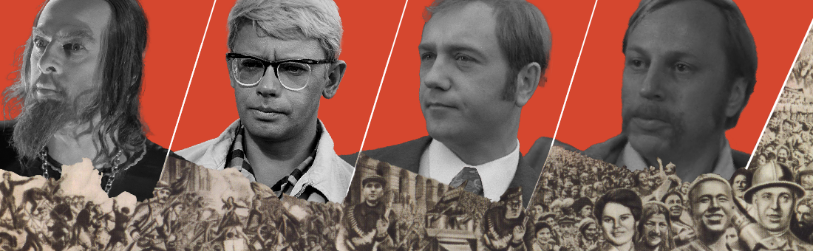
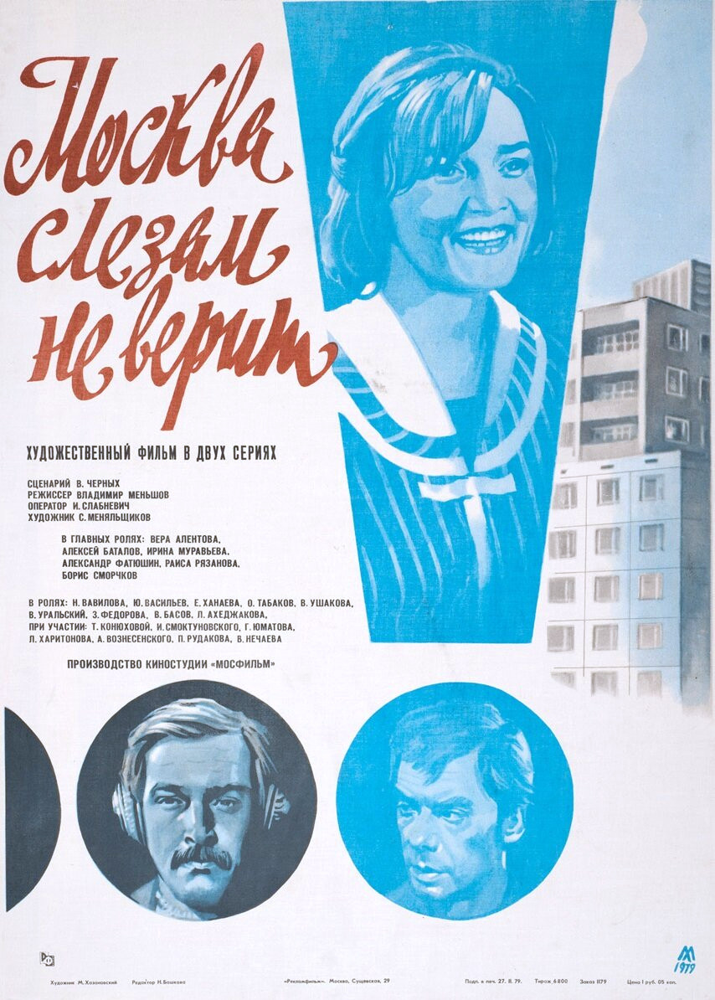
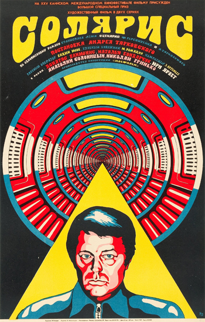

// header
// header



По своей сути очень разнообразно - от драм Эйзенштейна до комедий Гайдая, от фантастики Тарковского до трагичных образов Данелии - советское кино разнообразно и по содержанию, и по форме, и по духу. Оно сумело запечатлеть развитие во времени как самого Союза ССР, так и всей мировой кино-индустрии, и оставило в ней свой вечный след.
Советское кино самобытно по своей сути, оно передаёт уникальную атмосферу своего периода, в чём-то весёлую и оптимистичную, связанную с надеждами на светлое коммунистическое будущее, в чём-то грустную и хтоническую, ведь революционное переустройство общества и урбанизация ломали прежний привычный порядок жизни, создавали людей нового типа - советское поколение, новую историческую общность.

